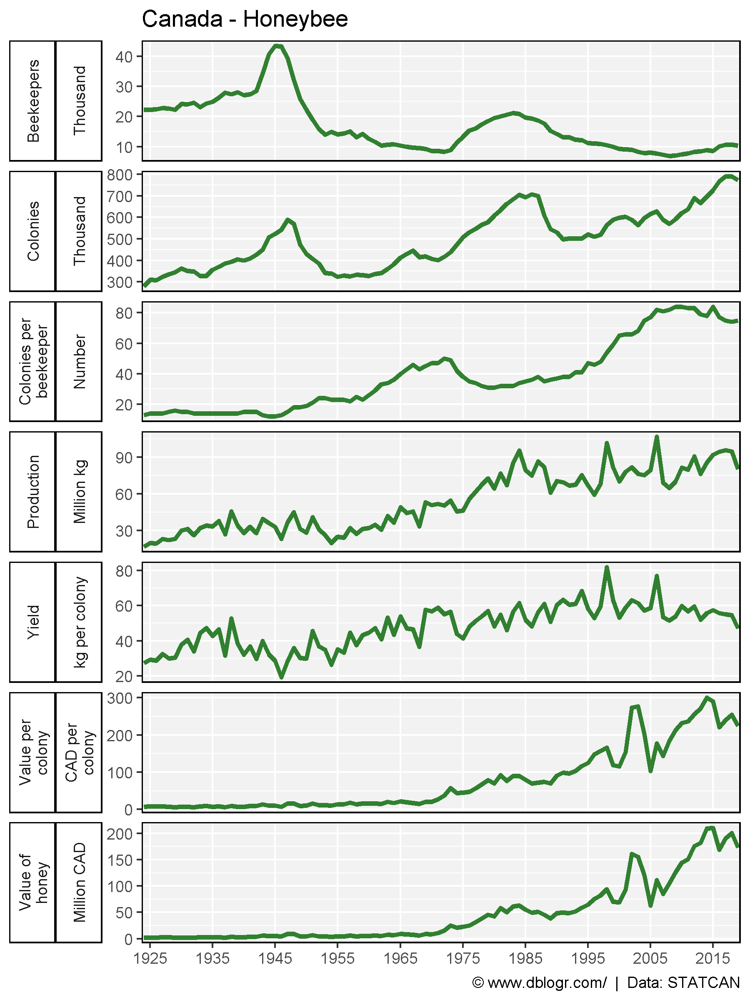
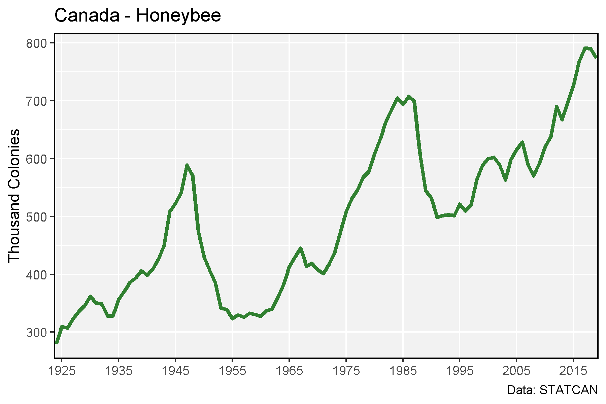
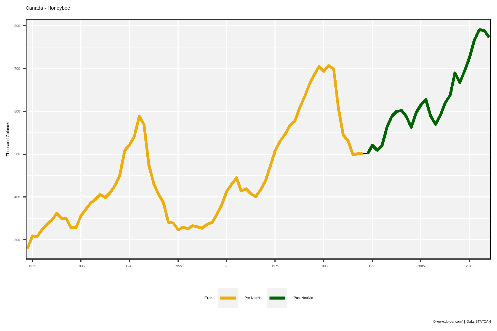
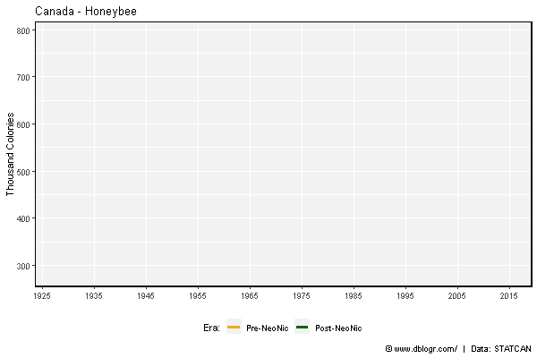
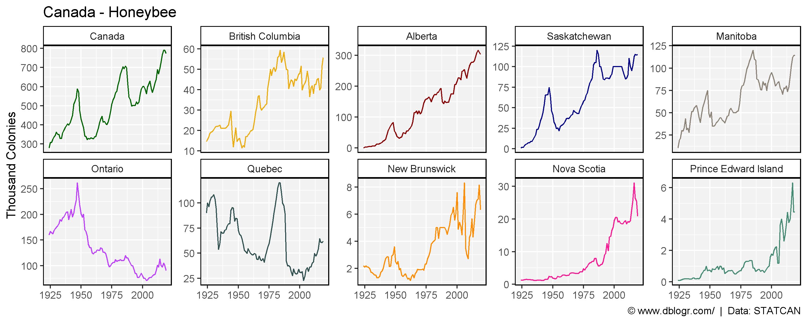
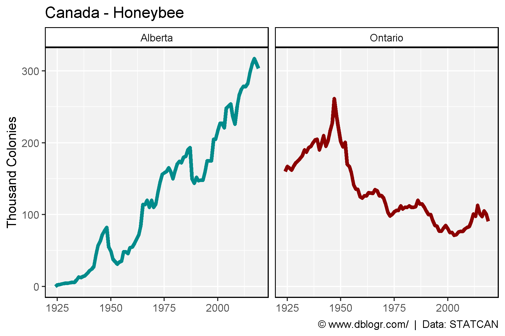
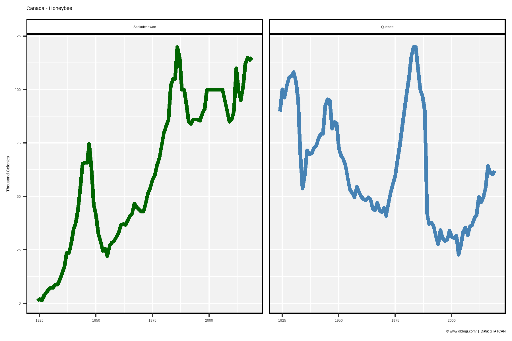

# devtools::install_github("derekmichaelwright/agData")
library(agData) # Loads: tidyverse, ggpubr, ggbeeswarm, ggrepel
library(gganimate)# Prep data
xx <- agData_STATCAN_Beehives %>%
filter(Area == "Canada", Measurement != "Value of honey and wax") %>%
mutate(Era = ifelse(Year >= 1994, "Post-NeoNic", "Pre-NeoNic"),
Era = factor(Era, levels = c("Pre-NeoNic", "Post-NeoNic")))
# Plot
mp <- ggplot(xx, aes(x = Year, y = Value)) +
geom_line(size = 1.25, color = "darkgreen", alpha = 0.8) +
facet_grid(Measurement + Unit ~ ., scales = "free", switch = "y",
labeller = label_wrap_gen(width = 14, multi_line = TRUE)) +
scale_x_continuous(breaks = seq(1925, 2020, 10), minor_breaks = NULL) +
coord_cartesian(xlim = c(min(xx$Year)+4, max(xx$Year)-4)) +
theme_agData(strip.placement = "outside", legend.position = "bottom") +
labs(title = "Canada - Honeybee", y = NULL, x = NULL,
caption = "\xa9 www.dblogr.com/ | Data: STATCAN")
ggsave("honeybee_canada_01.png", mp, width = 6, height = 8)
# Plot
mp <- ggplot(xx %>% filter(Measurement == "Colonies"), aes(x = Year, y = Value)) +
geom_line(size = 1.25, color = "darkgreen", alpha = 0.8) +
scale_colour_manual(name = "Era:", values = c("darkgoldenrod2", "Dark Green")) +
scale_x_continuous(breaks = seq(1925, 2020, 10), minor_breaks = NULL) +
coord_cartesian(xlim = c(min(xx$Year)+4, max(xx$Year)-4)) +
theme_agData(strip.placement = "outside", legend.position = "bottom") +
labs(title = "Canada - Honeybee", y = "Thousand Colonies", x = NULL,
caption = "\xa9 www.dblogr.com/ | Data: STATCAN" )
ggsave("honeybee_canada_02.png", mp, width = 6, height = 4)
# Plot
mp <- ggplot(xx %>% filter(Measurement == "Colonies"), aes(x = Year, y = Value)) +
geom_line() +
geom_line(aes(color = Era), size = 1.25) +
scale_colour_manual(name = "Era:", values = c("darkgoldenrod2", "Dark Green")) +
scale_x_continuous(breaks = seq(1925, 2020, 10), minor_breaks = NULL) +
coord_cartesian(xlim = c(min(xx$Year)+4, max(xx$Year)-4)) +
theme_agData(strip.placement = "outside", legend.position = "bottom") +
labs(title = "Canada - Honeybee", y = "Thousand Colonies", x = NULL,
caption = "\xa9 www.dblogr.com/ | Data: STATCAN" )
ggsave("honeybee_canada_03.png", mp, width = 6, height = 4)
# Plot
mp <- mp +
# gganimate
transition_reveal(Year) +
ease_aes('linear')
anim_save("honeybee_canada_gifs_01.gif", mp, width = 600, height = 400)
# Prep data
xx <- agData_STATCAN_Beehives %>%
filter(Measurement == "Colonies")
# Plot
mp <- ggplot(xx, aes(x = Year, y = Value, color = Area)) +
geom_line() +
facet_wrap(Area ~ ., scales= "free_y", ncol = 5) +
scale_color_manual(values = agData_Colors) +
theme_agData(legend.position = "none") +
labs(title = "Canada - Honeybee", y = "Thousand Colonies", x = NULL,
caption = "\xa9 www.dblogr.com/ | Data: STATCAN" )
ggsave("honeybee_canada_04.png", mp, width = 10, height = 4)
# Prep data
xx <- agData_STATCAN_Beehives %>%
filter(Measurement == "Colonies",
Area %in% c("Alberta","Ontario"))
# Plot
mp <- ggplot(xx, aes(x = Year, y = Value, color = Area)) +
geom_line(size = 1.5) +
facet_wrap(Area ~ ., ncol = 5) +
scale_color_manual(values = c("darkcyan", "darkred")) +
theme_agData(legend.position = "none") +
labs(title = "Canada - Honeybee", y = "Thousand Colonies", x = NULL,
caption = "\xa9 www.dblogr.com/ | Data: STATCAN" )
ggsave("honeybee_canada_05.png", mp, width = 6, height = 4)
# Prep data
xx <- agData_STATCAN_Beehives %>%
filter(Measurement == "Colonies",
Area %in% c("Saskatchewan", "Quebec"))
# Plot
mp <- ggplot(xx, aes(x = Year, y = Value, color = Area)) +
geom_line(size = 1.5) +
facet_wrap(Area ~ ., ncol = 5) +
scale_color_manual(values = c("darkgreen", "steelblue")) +
theme_agData(legend.position = "none") +
labs(title = "Canada - Honeybee", y = "Thousand Colonies", x = NULL,
caption = "\xa9 www.dblogr.com/ | Data: STATCAN" )
ggsave("honeybee_canada_06.png", mp, width = 6, height = 4)
© Derek Michael Wright www.dblogr.com/